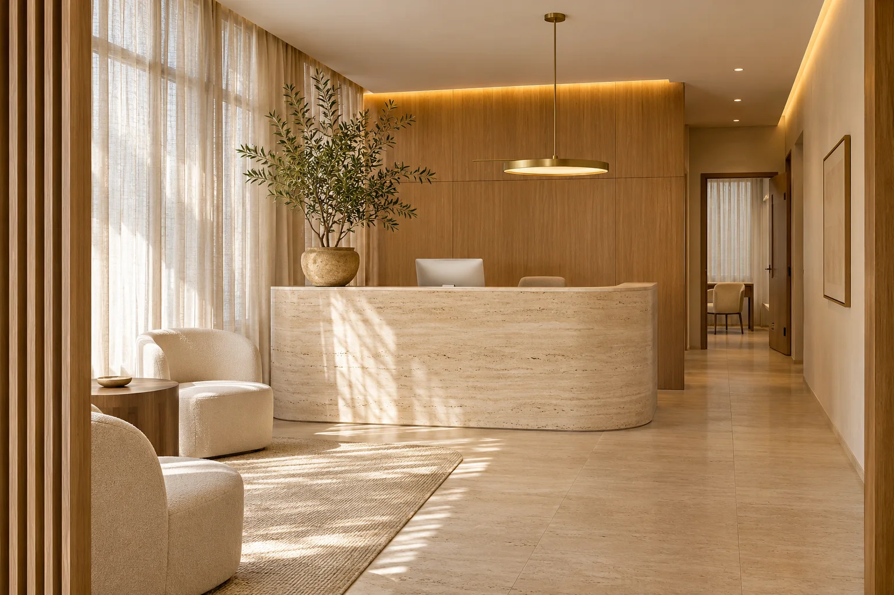

Diagnóstico e estratégia
Briefing de negócio, metas, oferta, análise do Instagram, concorrentes locais, posicionamento e planejamento de aquisição.
Sua clínica não precisa apenas de mais anúncios. Precisa de uma estrutura para ser encontrada, atrair as pessoas certas, transformar interesse em agendamento e acompanhar o que realmente vira receita.

O cuidado começa antes da consulta.Por isso, antes de investir mais, investigamos o caminho completo que uma possível paciente percorre até chegar à sua clínica.
Como ela aparece no Google, no mapa, no site e nas redes?
O posicionamento e a comunicação refletem a qualidade do serviço?
O site, os anúncios e os canais de contato facilitam o próximo passo?
A recepção tem processo, organização e acompanhamento comercial?
Em vez de cuidar de uma peça isolada do marketing, conectamos as frentes que influenciam a chegada e a conversão de novos pacientes.
O diagnóstico determina o que precisa ser criado, corrigido ou fortalecido. Cada clínica recebe um plano de implementação próprio.
Briefing de negócio, metas, oferta, análise do Instagram, concorrentes locais, posicionamento e planejamento de aquisição.
Recomendações e ajustes estratégicos no perfil, bio, destaques, apresentação dos serviços e caminhos de contato. Sem gestão de conteúdo diária.
Quando precisa, criamos um novo site; quando a estrutura existe, auditamos e otimizamos páginas, experiência mobile, velocidade e conversão.
Revisamos o Perfil da Empresa no Google, informações, serviços, site e sinais locais para melhorar consistência e oportunidades de visibilidade na cidade.
Criamos, publicamos e gerenciamos anúncios na Meta e no Google Ads. Planejamento, criativos, acompanhamento e otimização fazem parte da geração de demanda.
Funil comercial, organização dos contatos, scripts, orientação e treinamento da equipe para dar continuidade às oportunidades geradas.
Uma campanha pode gerar a descoberta. Mas, muitas vezes, a paciente pesquisa o nome da clínica, compara opções e busca mais informações antes de agendar.
* SEO é um trabalho progressivo: não garantimos posições específicas nem resultados imediatos nos buscadores.
O projeto começa com diagnóstico e organização. A estratégia é apresentada antes da execução e os avanços ficam organizados no painel do projeto.
Contrato, briefing, documentos, acesso aos canais, metas e estrutura da clínica.
Estudamos presença digital, site, Google, concorrentes e atendimento. Apresentamos as prioridades e o roadmap.
Planejamos campanhas, criativos, site e melhorias necessárias. Em paralelo, configuramos CRM e orientamos a recepção.
Colocamos a estratégia no ar após as validações e acompanhamos oportunidades, agendamentos e indicadores.
Os prazos são definidos após o diagnóstico e dependem também de materiais, acessos, gravações e aprovações da clínica.
Stanley e Guilherme conduzem a implementação da sua estratégia de aquisição. Marketing e comercial trabalham juntos para conectar a geração de demanda ao atendimento da clínica.
Você tem responsáveis definidos para alinhar prioridades, acompanhar as entregas e orientar os próximos passos.
Conversar com a nossa equipe
Estratégia de marketing, presença digital e implementação das frentes de geração de demanda.
Organização comercial, acompanhamento das oportunidades e orientação para o atendimento da clínica.
Campanhas, criativos, contatos e próximos passos no mesmo lugar. Veja como você acompanha o trabalho da Bādon e participa das aprovações.
Resultados, trabalho da Bādon e próximos passos em um só lugar.
A peça de apresentação teve o menor custo por contato. Vamos explorar novas variações dessa abordagem.
Uma nova rodada de criativos e a revisão do caminho entre o anúncio e o agendamento.
Contato não é venda. Acompanhe cada etapa.
Cenário ilustrativo de 30 dias: R$ 3.000 em mídia ÷ 100 contatos = R$ 30 por contato. Dos 100 contatos, 30 agendam uma avaliação, 24 comparecem e 8 contratam um protocolo. Conversões adotadas: 30% para agendamento, 80% de comparecimento e 33,3% de fechamento entre quem comparece.
O custo de mídia por venda seria R$ 375. Nos últimos 7 dias deste exemplo, são R$ 750 de mídia e 25 contatos, incluídos nos totais mensais. O valor de R$ 900 é uma referência de pacote, não de uma sessão avulsa. A indicação e o preço de cada procedimento cabem à clínica.
Estes números não são resultados de clientes, médias comprovadas do mercado ou promessa de desempenho. A receita contratada não equivale a dinheiro recebido e não desconta gestão, equipe, insumos, impostos, cancelamentos ou demais custos. Oferta, região, atendimento e campanha mudam o resultado.
Clareza para decidir. Veja a origem dos contatos e a continuidade do atendimento.
Contexto para aprovar. Criativo, roteiro e objetivo reunidos no mesmo lugar.
Critério para melhorar. Compare indicadores sem confundir cliques com agendamentos.
O anúncio abre a porta. A experiência da paciente continua na conversa com a recepção. É por isso que o comercial faz parte da nossa metodologia.
O atendimento ao paciente é feito pela equipe da clínica, não por um agente automático da Bādon.
Uma solução integrada funciona melhor quando as responsabilidades estão claras desde o início.
O escopo de site, implantação, suporte e licenças é detalhado na proposta. Todas as comunicações de saúde e estética devem respeitar as regras das plataformas e dos conselhos profissionais aplicáveis.
Cada clínica parte de uma realidade diferente. O diagnóstico ajuda a definir prioridades e o investimento necessário.
Sim. A Bādon planeja as campanhas, produz os criativos, publica os anúncios e gerencia a mídia na Meta (Instagram e Facebook) e no Google Ads. Acompanhamos os indicadores e fazemos ajustes contínuos. Essa operação faz parte da geração de demanda e se conecta ao site, ao CRM e ao atendimento da clínica. A verba de mídia é separada da gestão e definida na proposta.
Não necessariamente. Primeiro avaliamos estrutura, velocidade, experiência mobile, SEO e conversão. Se há uma boa base, otimizamos. Se um novo site for mais adequado, isso entra no plano proposto.
Não. Trabalhamos para melhorar a presença orgânica e local com ações técnicas e de conteúdo, mas o posicionamento depende também dos algoritmos, da concorrência e de outros fatores externos.
Não é uma gestão de conteúdo full time. Fazemos análise e ajustes estratégicos no perfil e produzimos os materiais necessários às campanhas de anúncios.
A equipe da própria clínica. Nós ajudamos com CRM, scripts, organização do processo e treinamento, para que a recepção esteja preparada. Não incluímos atendimento automatizado por IA.
Depende da prontidão dos acessos, site, criativos, gravações e aprovações. Após o diagnóstico, apresentamos um roadmap claro com a ordem de execução e os prazos estimados.
Não prometemos quantidade de pacientes, vendas ou posições no Google. Acompanhamos indicadores, corrigimos gargalos e buscamos melhorar continuamente a aquisição e a conversão conforme os dados disponíveis.
Converse com a Bādon. Vamos conhecer sua operação, entender seus objetivos e avaliar quais frentes precisam de atenção primeiro.